Wiki Accountability
James Montalvo - Daren Welsh - Stephanie Johnston
(Use arrow keys to navigate)
Wikipedia Scale: High End
-
Operating systems: Ubuntu, Windows, OS X
- 100s of watchers
- 1000s of edits
- 1000s of editors
-
Popular websites: Google, Facebook
- 1000s of watchers
- 1000s of edits
- 1000s of editors
-
Presidents: Barack Obama, George W. Bush
- 1000s of watchers
- 10000s of edits
- 1000s of editors
Wikipedia Scale: Low End
-
[[Lima Bean]]
- Fewer than 30 watchers
- 784 edits
- 487 editors
-
[[Augustan literature]]
- 40 watchers
- 487 edits
- 190 editors
-
[[Geography of Botswana]]
- Fewer than 30 watchers
- 156 edits
- 54 editors
- 14 years old
Our Wiki's Scale
- 47 active contributors
- 67272 edits
- 400k views in 3.5 years
Watcher Distribution: December 2014
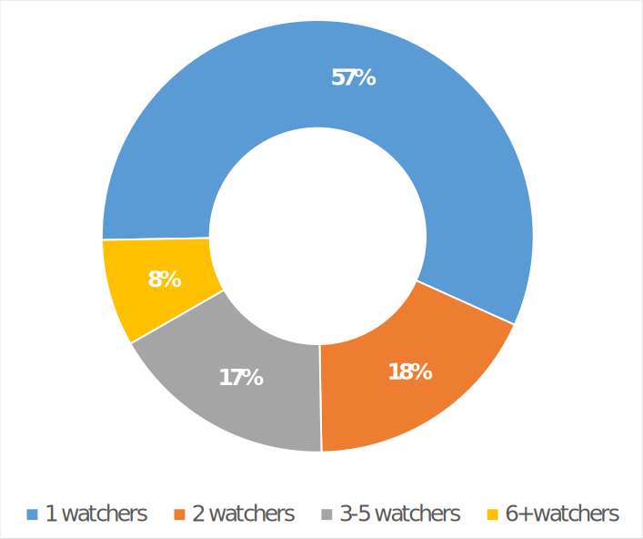Quantifying Accountability
- Determine number of reviewers for each page
- Determine a way to rate contributors
- Combine (1) and (2) to identify weak points in our data
- Address weak points
What MediaWiki already does
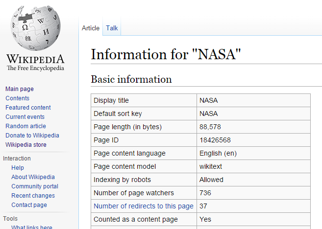What MediaWiki already does
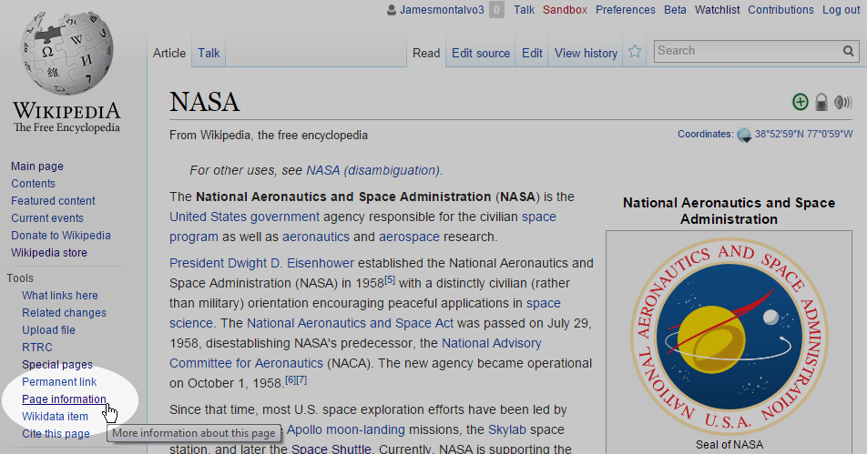What MediaWiki already does
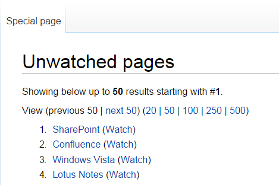Extension:Watch Analytics
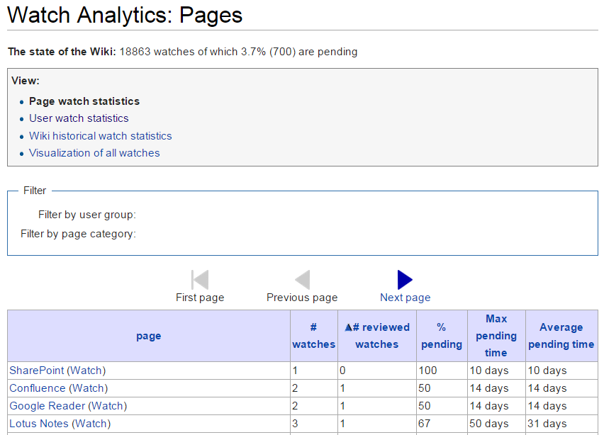Watcher⬄page relationships

Accountability Emergency
Short term goals
- Encourage users to do their reviews
- Eliminate singly-watched pages
Nondescript Watchlist Link
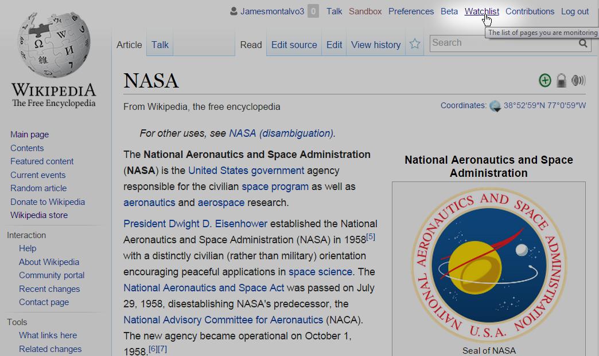Confusing Watchlist
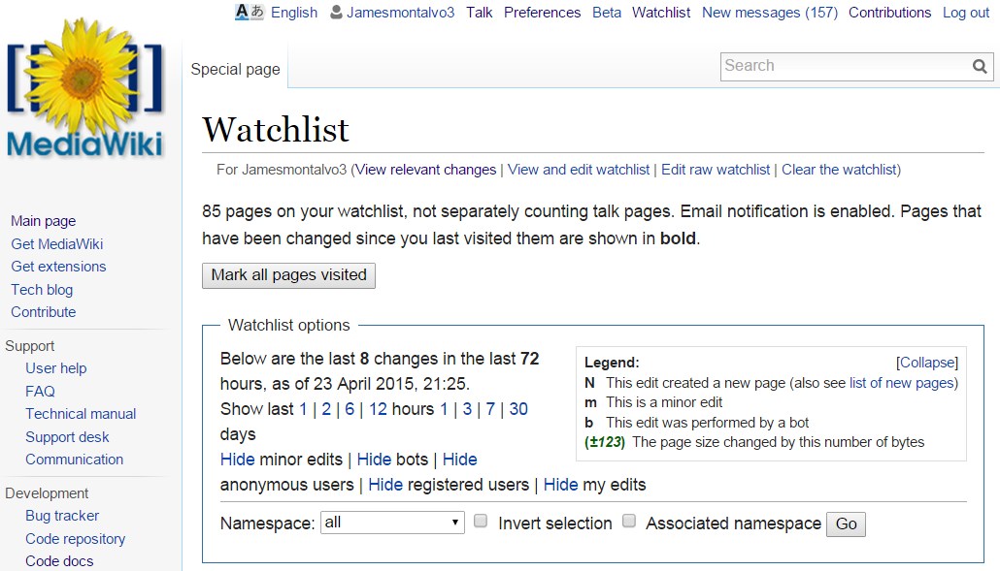Confusing Watchlist, Part 2
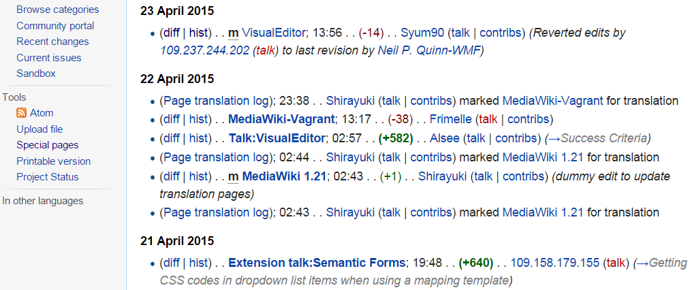Pending Reviews

How well are we doing with reviewers?
Big improvements

At the bottom of Pending Reviews
Watch Suggestions

Watch Suggestions: Real Conversation
Disclaimer: the names are fake and the words are paraphrased, but the conversation is real.
The other day Amy and Bob were heckling each other about who was watching more pages.
- Amy: "I'm watching almost as many pages as our boss...I'm going to get more than her!"
- Bob: "It just seems to randomly suggest pages to me, though. Why would I care about Rule #12345?"
- Amy: "Well, that rule page is about your hardware."
- Bob: "Oh, well maybe I do want to watch that!"
How has Watch Suggestions helped?
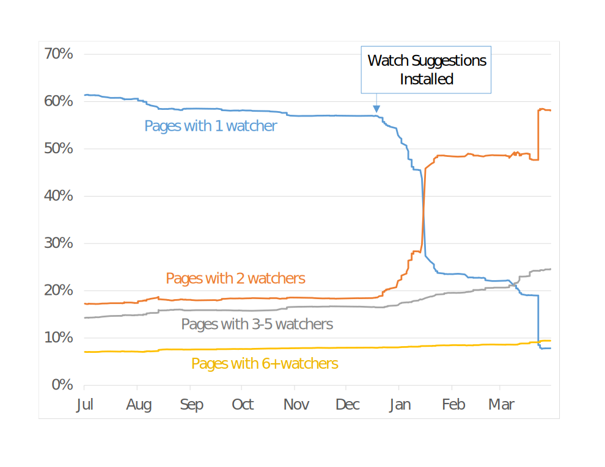Back to Quantifying Accountability
- Determine number of reviewers for each page
- Determine a way to rate contributors
- Combine (1) and (2) to identify weak points in our data
- Address weak points
Rating reviewers
- Accuracy
- Thoroughness
- Impartiality
- Variance across topics
- Probability of correctness
Correctness Score
Engagement Score
- Frequency and recency of editing
- Time between changes and reviews
- Use of page history and diff
- Time spent on each revision
- Quantity and age of pending reviews
User Statistics

Page Watch Quality

Page Watch Quality
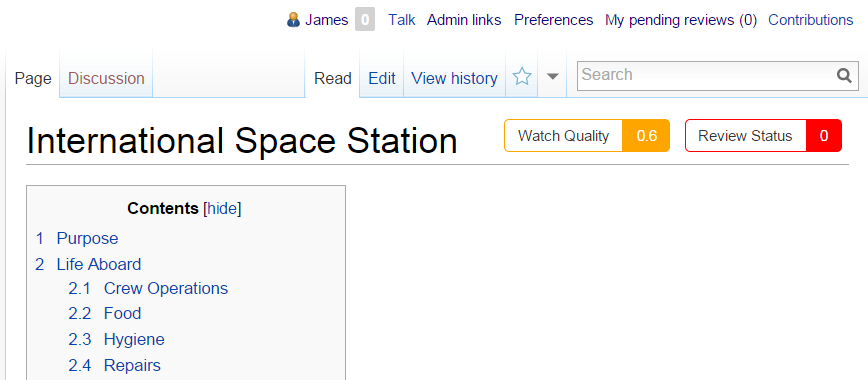Culture Changes
Voluntary vs. Enterprise
- Contributing because you want to
- Contributing because you are paid to
Goals
Without continuous contributions and qualified reviews from everyone in your community, a wiki is just another dumpster of outdated and unreliable information.
Review Initial goals
- Determine number of reviewers for each page
- Determine a way to rate contributors
- Combine (1) and (2) to identify weak points in our data
- Address weak points
Review Short term goals
- Encourage users to do their reviews
- Eliminate singly-watched pages
Our Goals from a different view
- Increase number of watchers for each page
- Increase frequency of reviews performed on each page
- Increase quality of reviews performed on each page
Refocus our goals
Instead of focusing on adding content, our focus is now on the quality of our content.
Even Wikipedia is criticized for focusing on quantity over quality (Source)
Target Behavior
- Watch Pages
- Edit often
- Review promptly
- Use page history and diff tool
- Review carefully
- Maintain low pending review count
Who are our users?
EVA Group Analysis
- 743 viewers
- 100 contributors
- 47 active contributors
Range of Response
- Early adopters
- Those that began using after some help and motivation
- Viewers, but not contributors
- Viewers, contributors, but not reviewers
- Stubborn, refuse to even view the wiki
Motivation
Extrinsic vs. Intrinsic
Intrinsic motivation
- Competence
- Autonomy
- Relatedness
User Personality Types
Based on an interview with Amy Jo Kim- Competitors - Act on other users (challenge, showoff, compare)
- Self-Expressers - Act on content (create, build, design, customize)
- Explorers - Interact with content (view, collect, review, curate)
- Collaborators - Interacting with users (share, comment, help)
Online Communities
- In a zero-sum game, we are opponents: One wins, others lose
- In a non-zero-sum game, we are partners: We all win or we all lose
User activity loops
The wiki police!
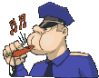Educational tools
- Welcome e-mail
- Tutorial pages
- Semantic Forms
- Screencasts
- Guided Tours
Meeting Minutes

Subject Matter Expert
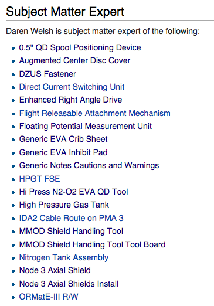 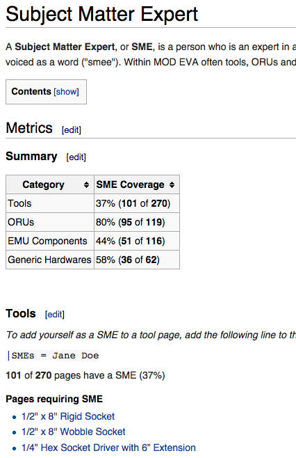Pending Reviews
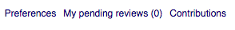 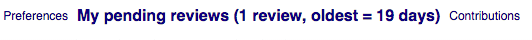Watch Suggestions
What we've been missing
- Have we accounted for all four personality types?
- Competition
- Self-Expression
- Exploration
- Collaboration
- Have we provided for intrinsic motivation?
- Competence
- Autonomy
- Relatedness
What we plan to add
Target Behavior
- Watch Pages
- Edit often
- Review promptly
- Use page history and diff tool
- Review carefully
- Maintain low pending review count
These behaviors are directly related to our new scores:
- User Engagement Score
- Page Scores
Thanks
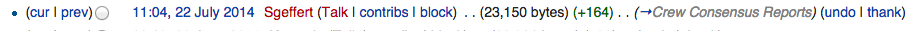Fun

Gamification Framework
- Define objectives
- Delineate target behaviors
- Describe players
- Devise activity loops
- Don't forget the fun
- Deploy the appropriate tools
Resources
Contacts
EnterpriseMediaWiki.org (github / @enterprisemw)
- James Montalvo (github / @jamesmontalvo3)
- Daren Welsh (github / @darenwelsh)
- Stephanie Johnston